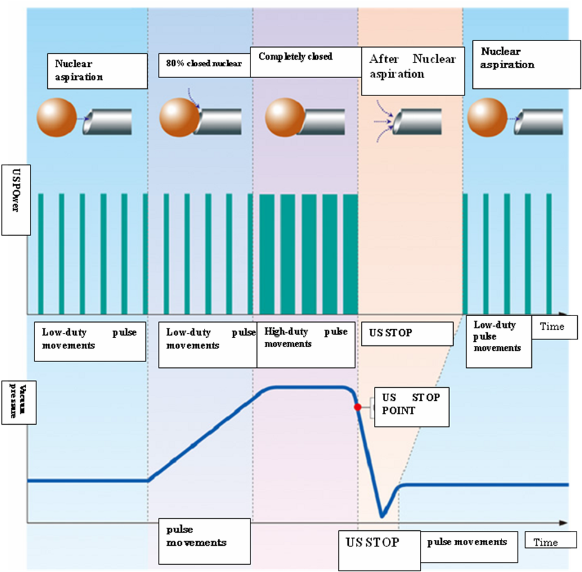
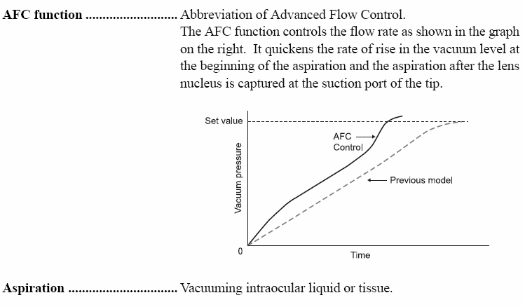

Hệ thống phẫu thuật Phaco CV-7000
PHACOEMULSIFICATION CV-7000
MODEL: CV-7000
HÃNG SẢN XUẤT : NIDEK
NƯỚC SẢN XUẤT : NHẬT BẢN
CÁC TIÊU CHUẨN MỚI
Mode tạo xung lặp tần suất cao
Mode tạo xung lặp lại tần suất cao (Pulse Mode) của CV-7000 mang lại khả năng hoạt động tốt hơn. Dao động lặp lại tần suất cao ít sinh nhiệt hơn so với dao động liên tục nên nó giảm khả năng gây bỏng vết mổ ngay cả đối với những trường hợp nhân cứng.
Mode tăng năng lượng siêu âm
Khi nhấn pedal điều khiển chân, tỷ lệ xung siêu âm tăng dần từ giá trị cài đặt lên tới giá trị 90 xung trên giây tùy theo mức độ nhấn pedal.
Đầu phaco mới
Đầu phaco Titanium nhẹ kiểu mới (58g) có tần số siêu âm sử dụng đánh nhuyễn thể thủy tinh là 40kHz.
Mode cài đặt chương trình: pro-pedal
“Pro-Pedal mode” của Nidek đạt được sự ổn định tiền phòng cao. Với việc có thể thay đổi thông số cài đặt áp lực vacuum, tốc độ hút, năng lượng siêu âm, số xung và điều khiển xung/tuyến tính cho từng vị trí của pedal, bác sỹ sẽ tối thiểu hóa ảnh hưởng của dao động tiền phòng trong suốt quá trình đánh nhuyễn bằng siêu âm.
* Phương thức pro-pedal được thiết lập sẵn ở cả pedal điều khiển chân đa chức năng tiêu chuẩn và lựa chọn thêm.
Vị trí 2: Mức Vacuum cao cho phép phaco tip giữ nhân tốt
Vị trí 3: Mức vacuum thấp hơn làm giảm những nguy cơ của sự phá vỡ tắc nghẽn đột ngột, duy trì sự ổn định tiền phòng
Hệ thống điều chỉnh xung nhịp tự động APS (Auto Pulse System)
Hệ thống APS tiên tiến mang lại khả năng điều chỉnh xung tự động hiệu quả hơn trong khi phẫu thuật Phaco, giúp tăng nhanh áp lực vacuum ngay khi bắt đầu bằng cách chuyển sang xung có tần suất cao (High-duty Pulse), cho hiệu quả hút nhân cao hơn, nhất là đối với những nhân cứng. Khi nhân đã được hút vào thì hệ thống sẽ lập tức điều chỉnh giảm năng lượng Vacuum mà không phụ thuộc vào độ nhấn của bàn đạp, giúp ổn định tiền phòng cao.
Khi xảy ra tắt nghẽn do khối nhân quá lớn và cứng, US sẽ tự động ngừng và hệ thống sẽ tự động tạo lực đẩy nhả mảnh nhân nếu áp lực tiền phòng bị giảm đáng kể, giúp loại trừ hoàn toàn tình trạng co kéo hoặc biến chứng rách bao sau.

Màn hình màu cảm ứng 10.4 inch
Chỉ những model đắt tiền mới được trang bị với những tiện nghi hiện đại nhất như LCD màu chạm. Tuy nhiên, CV-7000 kết hợp kiểu màn hình màu chạm 10.4inch cho hiệu quả trong phẫu thuật nhanh và dễ dàng. Đây cũng chỉ là một trong những tiêu chuẩn mới mà CV-7000 mới đưa ra.
HIỆU QUẢ TỐI ƯU VỚI MỨC ĐẦU TƯ TỐI THIỂU
Khởi động đáp ứng nhanh hơn
Với công nghệ bơm nhu động cải tiến, CV-7000 thực sự đã giảm thời gian khởi động nhanh hơn 40% và độ ổn định tiền phòng tốt hơn so với model thông thường.
Ống hút tubing sử dụng nhiều lần
Ống hút tubing của CV-7000 có thể sử dụng nhiều lần, giúp tiết kiệm chi phí khi sử dụng phẫu thuật.
Pedal điều khiển chân
Có sẵn hai loại pedal đáp ứng theo yêu cầu của bác sỹ sử dụng
- Pedal tiêu chuẩn
- Pedal điều khiển đa chức năng (lựa chọn thêm)
Cấu hình
Cột nâng chai dịch điều khiển tự động (lựa chọn thêm)
Máy chính
Chân đế đặt máy có bộ điều khiển (lựa chọn thêm)
THÔNG SỐ KỸ THUẬT
Tưới rửa: điều khiển pedal / free flow
Hút
Vacuum : 0-500mmHg
Tốc độ chảy : 1-50ml/phút
Điều khiển : tuyến tính / panel / AFC (Hệ thống kiểm soát dòng chảy tiên tiến)

Đầu US
Tần số : 40 kHz
Xung động : 1 – 90 xung trên 1 giây (thực hiện phaco lạnh & phaco hai tay)
Điều khiển : Tuyến tính / Panel
Handpiece : Titanium cao cấp, 4 tinh thể thạch anh (trọng lượng 58g)
Cắt dịch kính
Tốc độ cắt : 0 – 400 lát cắt/ phút
Nguồn : Máy nén khí lắp sẵn bên trong máy
Điện đông / Diathermy
Công suất : 10W, 90Ω
Tần số : 515 kHz
Điều khiển : Tuyến tính / panel
Kích thước / Trọng lượng: 385(W) x 450(D) x 275(H)mm / 17kg
15.2(W) x 17.7(D) x 10.8(H)” / 37.5lbs
Điện áp nguồn: AC 100 / 115 / 230V
Ống tubing : Dùng nhiều lần (có thể hấp tiệt trùng), gồm 2 bộ đi kèm
Chương trình nhớ: 20 chương trình
Màn hình : LCD màu, điều khiển chạm bằng cảm ứng (10.4inch)
Hoạt động : Chạm cảm ứng, xác nhận thông số & chương trình bằng giọng nói, chế độ ổn định áp lực tiền phòng tự động AFH.
Phụ kiện
Đầu handpiece US
Kẹp điện đông / Forceps for Diathermy
Đầu cắt dịch kính ( Vitrectomy)
Đầu phaco tip (lựa chọn thêm)
|
Tên |
Đầu tip US |
Đầu tip LP |
Đầu tip S |
Đầu tip OS |
|
Bẻ góc |
15°, 30°, 45° |
0°, 15°, 30° |
0°, 15°, 30°, 45° |
0°, 15° 30° |
|
Đường kính trong |
0.8mm |
1.0mm |
0.7mm |
0.8mm |
|
Đường kính ngoài |
1.1mm |
1.1mm |
0.9mm |
1.0mm |
|
Chiều dài |
20mm |
20mm |
23mm |
20mm |
|
Ống silicon Sleeve |
Tiêu chuẩn |
Tiêu chuẩn |
Kiểu S |
Tiêu chuẩn |
Ghi chú: Đầu phaco US tip 30 độ được cung cấp kèm theo máy
-----------------------------------